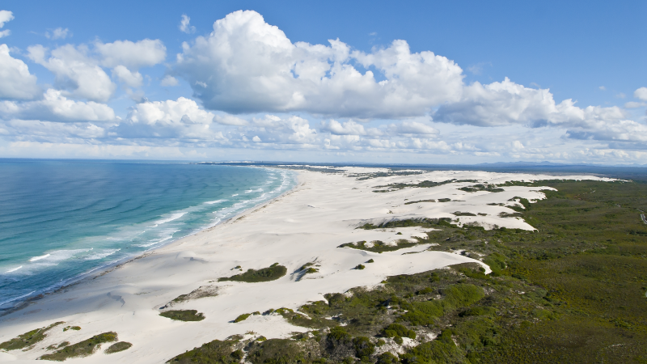

![]()

71%
of 190 ecosystem types
Threatened
of 190 ecosystem types
Threatened
19%
of 190 ecosystem types
Well Protected
of 190 ecosystem types
Well Protected
20%
of 20 taxa assessed
Threatened
of 20 taxa assessed
Threatened
14%
of 190 ecosystem types
Not protected
of 190 ecosystem types
Not protected
Summary
South Africa’s coastal zone has exceptional biodiversity, with 190 coastal ecosystem types supporting many endemic species found nowhere else on earth. The coast also provides numerous benefits to people, including food and materials, places to relax and play, and protection from storms and large waves. This means that the coast is also exposed to a number of pressures from human activities, on which the impacts of invasive species and climate change are superimposed. As a result, only half of South Africa’s coast is still in a natural to near-natural state, and a quarter of the coast is severely to critically modified. Given the extent and severity of ecological degradation, 71% of the coastal ecosystem types are threatened. There is good progress in protecting coastal biodiversity, with a third (19%) of coastal ecosystem types meeting their targets for protection, such that they are considered Well Protected. This needs to be strengthened, however, because a quarter (14%) of the coastal ecosystem types are Not Protected. There are also 68 ecosystem types that are highly threatened and under-protected (Critically Endangered or Endangered, and Not Protected or Poorly Protected). Restoring, managing and conserving coastal biodiversity in South Africa are key steps towards sustainable development, securing jobs and livelihoods, alleviating poverty, and enhancing human health and wellbeing. Planning cross-realm, in support of these actions, is essential.

Preamble: the new format of the NBA Coast Assessment content
Previously, the content for the Coast component of the National Biodiversity Assessment (NBA) was compiled into a technical report. With the move to the online format of the NBA to make the content more interactive, and the analyses more transparent and more easily repeatable, there is no longer an NBA Coast Assessment technical report.
The technical information for the NBA Coast Assessment is now compiled into publications, and the underlying data and analysis code are made available where relevant; interested readers can find these sections at the bottom of each page. The technical content has been summarised for a broader audience on the website pages.
We prefer the publications to be cited rather than the website pages because this affords acknowledgement to the broader group of contributors to the NBA Coast Assessment content. To cite the NBA 2025 Coast Assessment as a whole, refer to the Recommended citation at the bottom of this page.
Introduction
South Africa’s coast is a national asset, rich in biodiversity, history and cultures that are all woven into the fabric of our national heritage. Despite comprising only 4% of the mainland extent, the ecologically determined coastal zone (EDCZ) includes nearly a fifth (20%, i.e., 190) of its 952 ecosystem types.
The South African coast has exceptional biodiversity, with many endemic species found nowhere else on earth, particularly along the national south coast. This is largely a result of the strongly contrasting conditions around the coast, driven by the warm Agulhas Current sweeping down the east coast, and cool Benguela Current up the west coast, with distinct patterns in temperature, rainfall and geology that create the physical underpinning of South Africa’s coastal biological diversity1.
The coast also provides a wealth of benefits to the economy, society, and human health and wellbeing that sustain and enrich the lives of many South Africans2. These include both tangible and intangible benefits, such as: provision of food, medicine and useful materials; coastal protection and disaster-risk reduction; water filtration, nutrient cycling and carbon sequestration; tourism; job opportunities; places that support health, wellbeing, social cohesion, sports events, cultural and spiritual practices; and opportunities for learning and connecting with nature.
The coast is a relatively small area, but comprises a treasure trove of biodiversity and benefits for all South Africans to enjoy. It is no wonder that visiting South Africa’s beaches is one of the most popular tourism experiences by both local and international visitors.
Coastal ecosystem types
There are 190 coastal ecosystem types in South Africa, comprising 83 terrestrial, 22 estuarine, and 85 marine ecosystem types1. These ecosystems range from warm, mesic tropical and subtropical types in the north-east, to cool, arid and upwelling-driven types in the west. All of these ecosystem types have influences from both the land and the sea (Figure 1).

Although not currently included in the EDCZ, freshwater ecosystem types are likely to be included in future, particularly the coastal lakes, swamp forests (freshwater forested wetlands), dune slacks, groundwater, aquifers, seeps and springs, and river–estuary transition zones. There are also three micro-estuary types that are within the EDCZ; however, they are not currently assessed, and thus are not included in the count of coastal ecosystem types to simplify reporting.
Pressures on coastal biodiversity
Coastal ecosystems in South Africa are under more cumulative pressure than the non-coastal areas of the mainland territory, with habitat loss on land occurring twice as fast in the coastal zone.

The most intensive pressures in South Africa’s coastal zone are biological resource use, mining, and coastal development. Over-harvesting (including from poaching) is driving overexploited stock status and extinction risk in some species. Serial mining along the west coast and illegal mining are notable causes of concern, and are also key drivers of species extinction risk. Coastal development removes natural habitat and causes coastal squeeze as sea levels rise.
Reduced freshwater flow through estuaries impacts estuarine and coastal marine ecosystems as far offshore as the shelf edge in some places, with knock-on effects for coastal tourism, human health, and food and job security. Related to this is reduce sand delivery to the coast through rivers and estuaries. Between this and poor management of mobile dunefields, many beaches are sand-starved and in a state of erosion.
Ports and harbours are key drivers of cumulative coastal impacts and ecological degradation by providing points of access to the sea, leading to burgeoning development, changing local shoreline orientation, and being pressure hotspots. Other transport and service corridors (roads, railway lines, shipping) also impact coastal ecosystems by replacing natural habitat, disrupting land-sea connectivity, and increasing pollution and the risk of invasive alien species.
Many forms of pollution are impacting coastal biodiversity cross-realm, including chemicals (e.g., heavy metals, herbicides, pesticides, pharmaceuticals), sewage, plastics, light, noise, and dumped obsolete ammunition, but many of these pollutants are understudied and poorly understood, especially at a national scale. Deteriorating water quality from wastewater discharge, urban runoff, and agricultural runoff is a key issue in the coastal zone, particularly in retentive systems like estuaries and bays.
Both invasive species and climate change are exacerbating pressures to coastal biodiversity by changing natural ecological processes and reducing resilience of indigenous species. Some of the most important climate change impacts for coastal systems are sea-level rise, increases in the frequency and intensity of extreme storms and floods, changes in rainfall and run-off, and temperature change, particularly temperature extremes in the form of heatwaves, and thermal shock when marine heatwaves are followed by upwelling.
Ecosystem assessments
Ecological condition
Given the intensity and number of pressures to coastal biodiversity, half (48%) of the South African coast is no longer in a natural to near-natural state, and a quarter (26%) is severely/critically modified (Figure 2, Figure 3). Proportionately, there more than double the amount of modified habitat in the coastal zone than in non-coastal areas.

Ecosystem threat status
The criteria in the IUCN Red List of Ecosystems were applied to determine ecosystem threat status for the terrestrial, estuarine and marine assessments, with the results summarised here for the coastal ecosystem types. Ecosystem types were assessed as Critically Endangered, Endangered, Vulnerable (collectively referred to as threatened), Near Threatened, or Least Concern.
There are 134 (71%) threatened coastal ecosystem types that comprise 46% of the coastal extent, compared to 101 (22%) threatened ecosystem types that comprise 6% of the rest of the country (non-coastal land and sea). Proportionately, this means the coast has 3 times the number of threatened ecosystem types and almost an order of magnitude (8 times) more threatened area than the rest of the South African mainland territory (Figure 4, Figure 5).


These results are not comparable with the results from the NBA 2018 given the different assessment methodologies between the two assessments, but improvements in data and methods have shown a more threatened status of the coast compared with that reported in 2018.
Ecosystem protection level
Ecosystem protection level was determined by calculating the proportion of each ecosystem type in a protected area, and evaluating these against a predefined biodiversity target per ecosystem type, with heuristics regarding the ecological condition of the ecosystem types under protection. Ecosystem types are assigned one of four categories of protection: Well Protected - biodiversity target is met; Moderately Protected - at least half the biodiversity target is met; Poorly Protected - more than 5% of the biodiversity target is met, and Not Protected - less than 5% of the biodiversity target is met.
There is good progress in representing coastal ecosystem types in protected areas, with 86% of 190 coastal ecosystem types now having some level of protection. However, only 19% of coastal ecosystem types are Well Protected, covering just 7% of the ecologically determined coastal zone (EDCZ), meaning 81% of coastal ecosystem types covering 93% of the EDCZ are not yet meeting their biodiversity targets for protection (Figure 6, Figure 7).


These results are also not comparable with those from the NBA 2018 because of changes in biodiversity targets and assessment methodologies.
Coastal ecosystem types at highest risk of loss
The ecosystem types that are at highest risk of loss can be identified by intersecting the results of the ecosystem threat status and protection level analyses, and sub-setting the results to the most threatened and most under-protected ecosystem types (Table 1).
Of the 134 (of 190) threatened coastal ecosystem types (Critically Endangered, Endangered, Vulnerable), 118 (88%) are under-protected (Moderately Protected, Poorly Protected, Not Protected). Sixty-Eight of these are high risk, because they are highly threatened and under-protected (Critically Endangered or Endangered and Poorly Protected or Not Protected, Figure 8).

To see which specific ecosystem types are highly threatened and under-protected, filter Table 1 to the categories indicated in Figure 8.
Species assessments
Species assessments are included in the Coast Assessment for the first time. As a first step, the threat status of 20 sandy beach invertebrates was assessed, with 1 in 5 species assessed as Endangered. A further 3 species were assessed as Near Threatened (Figure 9).

The Endangered coastal species are all endemic, and are impacted primarily by mining, wrack harvesting, coastal development and artificial light at night (Tylos granulatus, Tylos capensis, Acanthoscelis ruficornis), and over-harvesting, mining, and harmful algal blooms (Donax serra).


Priority actions
In addition to the overall priority actions distilled from this assessment, the 10 priority actions specifically for South Africa’s coastal zone are given below.
Knowledge gaps and research priorities
Nineteen knowledge gaps have been identified as research priorities to strengthen further coastal biodiversity foundational knowledge and understanding of impacts to coastal biodiversity to improve assessment, and also to better understand the benefits of biodiversity and the best ways of communicating the these in a way that most inspires South African’s into action for change towards long-term sustainability. These 19 knowledge gap–research priority clusters are grouped under four themes.
Way forward
Restoring, managing and conserving coastal biodiversity in South Africa are key steps towards sustainable development, securing jobs and livelihoods, alleviating poverty, and enhancing human health and wellbeing. These actions also align well with the United Nations Decade on Ecosystem Restoration 2021-2030 and Targets in the Kunming-Montreal Global Biodiversity Framework.
Now more than ever, South Africa is poised to secure key coastal biodiversity and ecological infrastructure: half the coast is in natural to near-natural ecological condition, and the integrated map of ecosystem types3,4 and results from this assessment pave the way for better biodiversity planning, management and decision-making in the coastal zone.
Cross-realm planning is essential to ensure that land-sea ecological processes and species distributions are adequately accounted for in land-based and marine Spatial Biodiversity Plans (Maps of Critical Biodiversity Areas and Ecological Support Areas - CBA Maps, and associated land and sea-use guidelines). These Spatial Biodiversity Plans are a key tool by which to align governance, planning and decision-making across realms and across organs of state to achieve effective, science-based and proactive integrated coastal zone management5.
Technical documentation
Data availability
Git repository
Access the repository for the NBA 2025 Coast Assessment content on GitHub
Shapefiles
Publications
COASTAL ECOSYSTEMS
Harris, L.R., Adams, J.B., Dayaram, A., Dunga, L.V., Job, N., Kirkman, S.P., Lamberth, S.J., Pfaff, M.C., Raw, J.L., Rishworth, G.M., Robbins, A., Sink, K.J., Skowno, A.L., van Deventer, H., van Niekerk, L., 2025. Cross-realm biodiversity profile of the South African coastal zone. African Journal of Marine Science 47, 1-18. https://doi.org/10.2989/1814232X.2025.2463342
Description of the different types of coastal ecosystem types and broad biodiversity patterns in the South African coastal zone; the supplementary material includes a glossary of terms, guidance regarding map layers to use, and a table of the ecosystem types and their areasHarris, L.R., Bessinger, M., Dayaram, A., Holness, S., Kirkman, S., Livingstone, T.-C., Lombard, A.T., Lück-Vogel, M., Pfaff, M., Sink, K.J., Skowno, A.L., Van Niekerk, L., 2019. Advancing land-sea integration for ecologically meaningful coastal conservation and management. Biological Conservation 237, 81-89. https://doi.org/10.1016/j.biocon.2019.06.020
Technical details regarding the conceptualisation and delineation of the land-sea interface into ecosystem types
COASTAL PRESSURES
- Harris, L.R., van Niekerk, L., Sink, K.J., Skowno, A.L., Kirkman, S.P., Adams, J.B., James, N.C., Lamberth, S., Lemley, D.A., Majiedt, P., MacKay, F., Newman, B., Pichegru, L., Porter, S.N., Taljaard, S., Van Der Merwe, S. Pressures on coastal biodiversity in South Africa: a cross-realm review. African Journal of Marine Science. In review.
Description of the different pressures on coastal ecosystem types and species in South Africa
COASTAL ECOSYSTEM ASSESSMENTS (CONDITION, THREAT STATUS, PROTECTION LEVEL)
Harris, L.R., Skowno, A.L., Holness, S.D., Sink, K.J., van Niekerk, L., van Deventer, H., Smith-Adao, L., Job, N., Khatieb, S., Monyeki, M. Indicators for tracking progress in effective, representative ecosystem protection. Conservation Biology, in review.
Technical details regarding development of new indicators of effective, representative ecosystem protection and their application in South AfricaHarris, L.R., Skowno, A.L., Sink, K.J., Van Niekerk, L., Holness, S.D., Monyeki, M., Majiedt, P., 2022. An indicator-based approach for cross-realm coastal biodiversity assessments. African Journal of Marine Science 44, 239-253. https://doi.org/10.2989/1814232X.2022.2104373
Technical details regarding the threat status assessment of coastal ecosystem types from the NBA 2018
COASTAL SPECIES ASSESSMENTS
- Harris, L.R., Raimondo, D., Sink, K., Holness, S.D., Skowno, A.L., 2025. Sandy beach ecosystem and species red listing highlight priorities for beach conservation and restoration. Estuarine, Coastal and Shelf Science, 324: 109447. https://doi.org/10.1016/j.ecss.2025.109447.
Technical details on the IUCN Red List of Species assessments for sandy beach invertebrates
PRIORITY ACTIONS
- Harris, L.R., van Niekerk, L., Holness, S.D., Sink, K.J., Skowno, A.L., Dayaram, A., van Deventer, H., Job, N., Lamberth, S.J., Adams, J.B., Raw, J.L., Riddin, T., MacKay, C.F., Perschke, M.J., 2025. Conserving cross-realm coastal biodiversity when real-world planning and implementation processes split the land and sea. Ocean & Coastal Management 263, 107586. https://doi.org/10.1016/j.ocecoaman.2025.107586
Technical details regarding cross-realm conservation planning to ensure inclusion of land-sea processes and biodiversity, with proposed management recommendations for restoring and conserving coastal biodiversity
Technical report
In NBA 2025, the technical documentation of the content is in the form of publications.
Harris, L.R., Sink, K.J., Skowno, A.L., Van Niekerk, L. eds., 2021. South African National Biodiversity Assessment 2018 Technical Report Volume 5: Coast. South African National Biodiversity Institute, Pretoria. http://hdl.handle.net/20.500.12143/6374.
Technical report from the NBA 2018, updated in 2021
Recommended citation
Harris, L.R., Besseling, N., Sink, K.J., Skowno, A.L., & Van Niekerk, L. 2025. Overview: Coastal zone. National Biodiversity Assessment 2025. South African National Biodiversity Institute. http://nba.sanbi.org.za/.
References
1. Harris, L. et al. 2025. Cross-realm biodiversity profile of the South African coastal zone. African Journal of Marine Science 47: 1–18. https://doi.org/10.2989/1814232x.2025.2463342
2. Harris, L.R. et al. 2021. Chapter 3: Benefits of coastal biodiversity. In Harris, L.R. et al. (eds), South African National Biodiversity Institute, Pretoria. http://hdl.handle.net/20.500.12143/6374.
3. Harris, L.R. et al. 2025. Cross-realm biodiversity profile of the south african coastal zone. African Journal of Marine Science 47: 1–18.
4. Harris, L.R. et al. 2019. Advancing land-sea integration for ecologically meaningful coastal conservation and management. Biological Conservation 237: 81–89. https://doi.org/10.1016/j.biocon.2019.06.020
5. Harris, L.R. et al. 2025. Conserving cross-realm coastal biodiversity when real-world planning and implementation processes split the land and sea. Ocean & Coastal Management 263: 107586. https://doi.org/https://doi.org/10.1016/j.ocecoaman.2025.107586